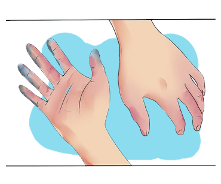

Você sabe que existem consequências caso você não utilize os EPIs adequadamente?
Hipotermia
Uma das consequências é a Hipotermia: situação que ocorre quando a temperatura corporal atinge valores inferiores a 35°C.
Geladura
Outra consequência é chamada de Geladura. Ela afeta principalmente o dorso das mãos e dos pés.